مثال: مطمئن شدن از نامعتبر بودن یک مقدار: در این مثال با عملگر مقایسهای != به معنای نابرابری، برنامه نوشته شده و اگر نام کاربری وارد شده نامساوی با "guest" باشد، از ورود او با پیغام مناسب جلوگیری میشود. برنامه را اجرا و نتیجه را با دادههای مختلف بررسی کنید (شکل60).
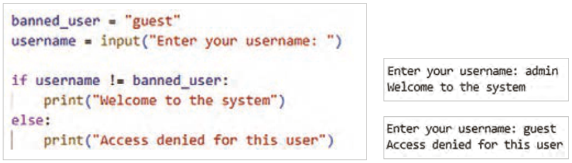
شکل ۶۰
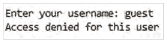
مثال: در این برنامه عملگر > برای بررسی شرط بیشتر بودن نمره هنرجو در دروس پودمانی از عدد 12 استفاده شده است. برنامه را اجرا و نتیجه را با دادههای مختلف بررسی کنید (شکل61).
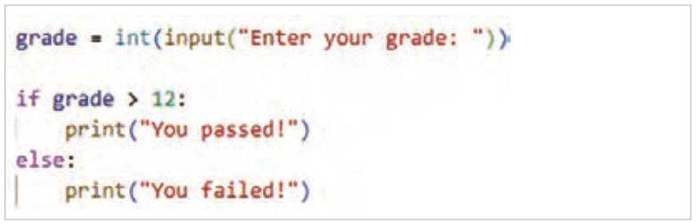
شکل ۶۱
مثال: در این برنامه عملگر < برای بررسی محدودیت سنی زیر ۱۸ سال برای ورود به سایت استفاده شده است. برنامه را اجرا و نتیجه را با دادههای مختلف بررسی کنید (شکل62).
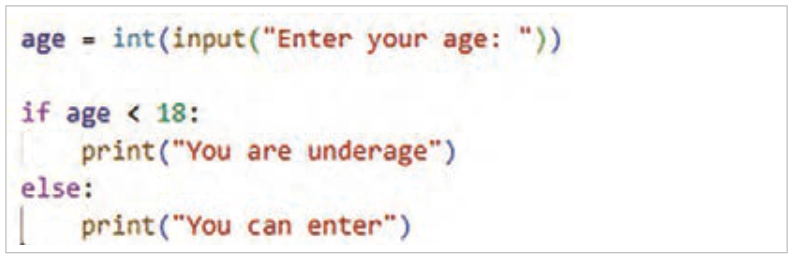
شکل ۶۲
صفحه ۲۸
مثال: در این برنامه محدودیت تعداد سفارش کالا با عملگر <= مورد بررسی قرار گرفته است که تنها به تعداد ۵ یا کمتر از ۵ را شامل میشود. برنامه را اجرا و نتیجه را با دادههای مختلف بررسی کنید (شکل63).
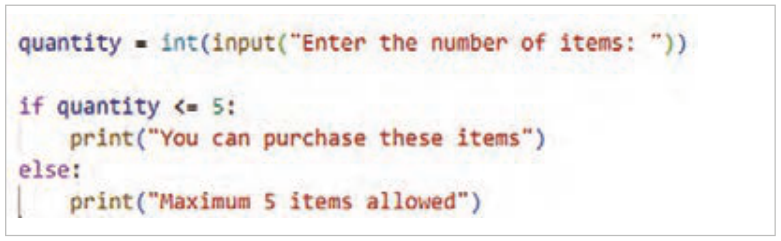
شکل ۶۳
مثال: در این برنامه محدودیت پایه تحصیلی 11 برای ورود به سیستم پیشرفته با عملگر >= برقرار شده است. برنامه را اجرا و نتیجه را با دادههای مختلف بررسی کنید (شکل64).
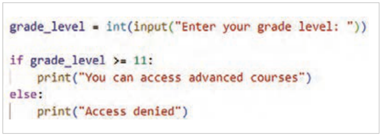
شکل ۶۴
مثال: در این برنامه شرط ورود به مرحله دوم مسابقه سن حداقل ۱۸ و امتیاز حداقل 70 در نظر گرفته شده است. برنامه با عملگرهای مقایسه >= به معنی بزرگتر مساوی و عملگر منطقی and به معنی " و " نوشته شده است. نتیجه عملگر and زمانی True است که هر دو عبارت و هر دو True باشند. برنامه را اجرا و نتیجه را با دادههای مختلف بررسی کنید (شکل65).
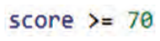
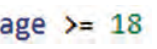
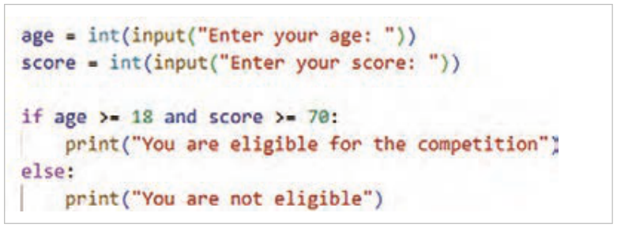
شکل ۶۵
صفحه ۲۹
مثال: در این برنامه عملگر منطقی or بین دو عبارت قرار گرفته است و شرط را برای برقراری یکی از عبارات بررسی میکند. نتیجه آن زمانی true است که یکی از عبارات دو طرف or درست باشد. برنامه را اجرا و نتیجه را با دادههای مختلف بررسی کنید (شکل66).
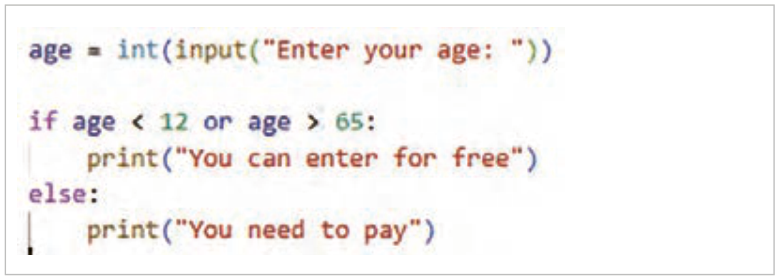
شکل ۶۶
نوع سوم ساختار شرطی if – elif– else
این ساختار زمانی استفاده میشود که چند شرط مختلف وجود داشته باشد و برنامه باید یکی از آنها را انتخاب کند. elif شرط جدید را در صورت برقرار نبودن شرطهای قبلی بررسی میکند، یعنی اگر یکی از شرطهای if یا elifها برقرار شود و دستور آن اجرا شود دیگر شرط سایر elifها بررسی نخواهد شد. elif مخفف else if است و برای بررسی شرطهای بعدی استفاده میشود. تفاوت بین else و elif این است که بعد از else هیچ شرطی نوشته نمیشود.
ساختار کلی if – elif – else
if condition1:
statements1
elif condition2:
statements2
else:
statements_else
صفحه ۳۰
مثال: برنامهای بنویسید که سطح بازی را از ورودی دریافت و سپس بر اساس آن پیامی مناسب نمایش دهد. برنامه را نوشته، اجرا و نتیجه را با دادههای مختلف بررسی کنید (شکل67).
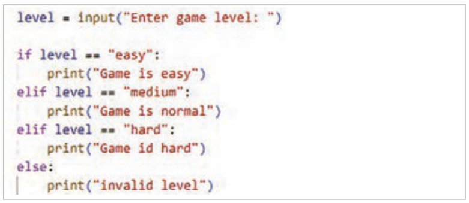
شکل ۶۷
مثال: برنامهای بنویسید که پس از دریافت نوع غذا و نوشیدنی از کاربر در آن موارد زیر بررسی شود:
اگر پیتزا و نوشیدنی انتخاب شود ← قیمت 140000
اگر پیتزا بدون نوشیدنی← قیمت 120000
در غیر این صورت ← پیام«Other option» چاپ شود. در این مثال استفاده از عملگر منطقی and در شرط، مورداستفاده قرار گرفته است. برنامه را نوشته و اجرا کنید (شکل68).
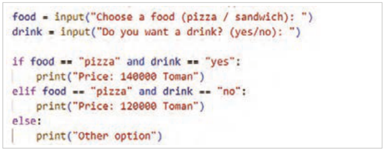
شکل ۶۸
مثال: دستورات زیر وضعیت دستگاه را از کاربر دریافت میکند و بر اساس آن پیام مناسب را نمایش میدهد. برنامه زیر را اجرا و نتیجه را بررسی کنید (شکل69).
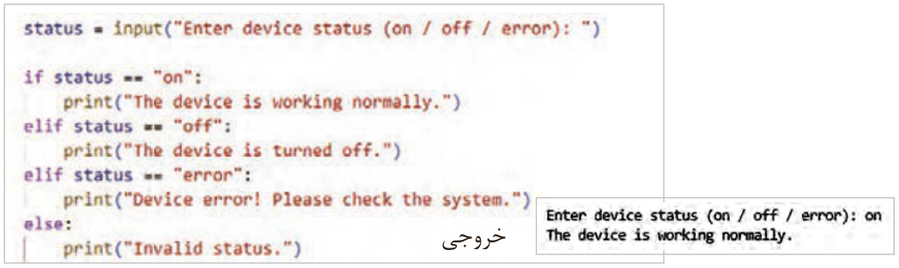
شکل ۶۹
صفحه ۳۱
مزیت استفاده از ساختار if-elif-else نسبت به استفاده از چند if مجزا این است که اگر شرطی برقرار باشد، دیگر شرطهای بعدی توسط برنامه بررسی نمیشوند. این ویژگی باعث افزایش سرعت اجرای برنامه و بهینهتر شدن عملکرد آن میشود.
مثال: برنامهای بنویسید که اگر مقدار choice یکی از گزینههای زیر بود، پیام مناسب را چاپ کند و در غیر این صورت پیام Food not available نمایش داده شود (شکل70).
الف) منوی غذا شامل دو گزینه زیر
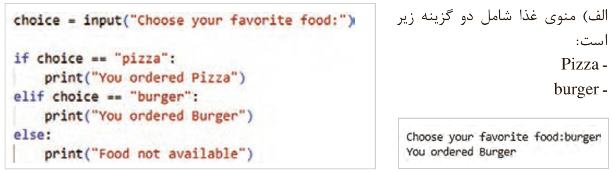
شکل ۷۰
است:
Pizza
burger
صفحه ۳۲
ب) برنامه را گسترش دهید که اگر منوی غذا شامل سه گزینه زیر باشد: (شکل71)
pizza
burger
pasta
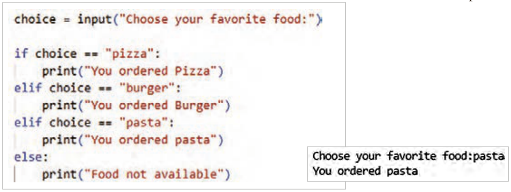
شکل ۷۱
در مثال بالا اگر منو 20 غذا داشته باشد چه میشود؟ یا اگر فردا غذا جدید اضافه شود چه؟ اولین راهحلی که به نظر میرسد ایناست که از تعداد بیشتری if استفاده شود. ولی این کار، کد را طولانیتر و سختتر میکند. اما راه حل آن استفاده درست از لیستها و دستورات حلقههای تکرار است.
حلقههای تکرار (Loop)
در هنگام کدنویسی، اگر نیاز باشد یک دستور یا مجموعهای از دستورات چندین بار اجرا شود، از ساختارهای حلقههای تکرار استفاده میشود. این ساختارها باعث میشوند کدها خواناتر، کوتاهتر و خواناتر و مدیریت آن آسانتر شود. بهعنوانمثال، اگر لازم باشد برنامهای نوشته شود که کلمۀ python را ۱۰ بار چاپ کند، بهجای آنکه دستور (print('python' ده بار به صورت جداگانه نوشته شود، میتوان این دستور را تنها یکبار داخل یک حلقه قرارداد تا اجرای آن بهصورت خودکار ده بار تکرار شود.
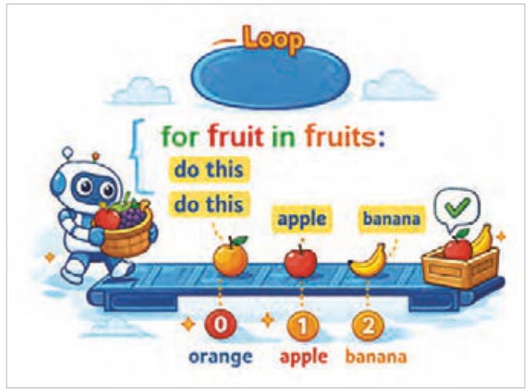
شکل ۷۲
Page 27
Example: making sure a value is not allowed: in this example the program uses the comparison operator !=, meaning «not equal», and if the username entered is not equal to "guest"… the entry is blocked with a suitable message. Run the program and check the result with different data (Figure 60).
Figure 60
Example: in this program the operator > is used to check the condition that the student's score in the module lessons is greater than 12. Run the program and check the result with different data (Figure 61).
Figure 61
Example: in this program the operator < is used to check the age limit of under 18 years for entering a website. Run the program and check the result with different data (Figure 62).
Figure 62
Page 28
Example: in this program the limit on the number of ordered items is checked with the operator <=, which includes only 5 or fewer than 5. Run the program and check the result with different data (Figure 63).
Figure 63
Example: in this program the limit of the 11th grade for entering the advanced system is set with the operator >=. Run the program and check the result with different data (Figure 64).
Figure 64
Example: in this program the condition for entering the second round of the competition is an age of at least 18 and a score of at least 70. The program is written with the comparison operator >= meaning greater than or equal and the logical operator and meaning " and ". The result of the operator and is True when both expressions are True. Run the program and check the result with different data (Figure 65).
Figure 65
Page 29
Example: in this program the logical operator or is placed between two expressions and checks whether either of them holds. Its result is true when one of the expressions on either side of or is true. Run the program and check the result with different data (Figure 66).
Figure 66
The third form of the conditional structure: if – elif – else
This structure is used when there are several different conditions and the program must choose one of them. elif checks a new condition when the previous conditions did not hold; that is, once one of the if or elif conditions holds and its statements run, the remaining elif conditions are not checked. elif is short for else if and is used to check further conditions. The difference between else and elif is that no condition is written after else.
The general form of if – elif – else
if condition1:
statements1
elif condition2:
statements2
else:
statements_else
Page 30
Example: write a program that reads the game level from the input and shows a suitable message based on it. Write and run the program and check the result with different data (Figure 67).
Figure 67
Example: write a program that, after getting the food and the drink from the user, checks the following:
If pizza with a drink is chosen ← price 140000
If pizza without a drink ← price 120000
Otherwise ← print the message «Other option». This example uses the logical operator and in the condition. Write and run the program (Figure 68).
Figure 68
Example: the statements below get the status of a device from the user and show a suitable message based on it. Run the program below and check the result (Figure 69).
Figure 69
Page 31
The advantage of if-elif-else over several separate if statements is that once a condition holds, the program does not check the later conditions. This makes the program run faster and work more efficiently.
Example: write a program that prints a suitable message if the value of choice is one of the options below, and otherwise shows the message Food not available (Figure 70).
A) The food menu has the two options below
Figure 70
:
Pizza
burger
Page 32
B) Extend the program for a food menu with the three options below: (Figure 71)
pizza
burger
pasta
Figure 71
In the example above, what happens if the menu has 20 foods? Or if a new food is added tomorrow? The first solution that comes to mind is to use more if statements. But that makes the code longer and harder. The real solution is to use lists and loop statements properly.
Loops
When coding, if a statement or a group of statements must run several times, loop structures are used. They make code shorter, more readable, and easier to manage. For example, if you need a program that prints the word python 10 times, instead of writing the statement print('python') ten separate times, you can put it once inside a loop so that it runs ten times automatically.